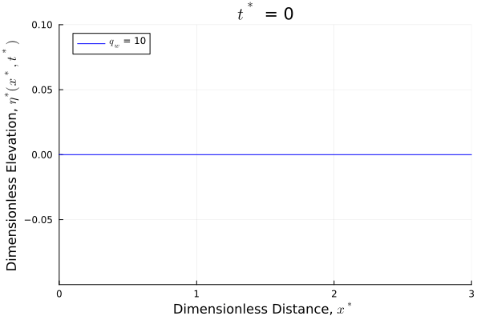
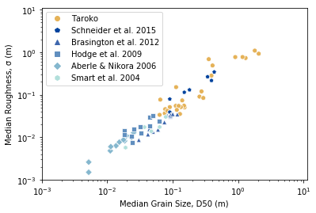

Research
GitHub
link.
Google Scholar
link.
Overview
My research is primarily within the field of Geomorphology and focused on fluvial systems. Most of my research is related to the dynamic ineractions between river channel form and process. I am motivated by explaining natural phenomena in a quantitative manner, often making use of a combination of field work, modeling, and data analysis to test hypotheses.
I am also interested in fluid mechanics and am fascinated by the Buckingham-Pi Theorem.
Graduate Research
Rivers are features known for sculpting their landscape, incising valleys (Whipple & Tucker, 1999) and forming floodplains (Wolman & Leopold, 1957), yet they are themselves shaped by the surrounding environment. For example, an alluvial river is thought to adjust its slope to transport the sediment load supplied to it (Mackin, 1948). River channel width reflects both the hydrological regime and the substrate in which the river exists (Dunne & Jerolmack, 2020; Hack, 1957; Parker, 1978; Parker et al., 2007). Morphologic structures characteristic of the channel are further shaped by feedbacks between the given geology and hydrology (Carr et al., 2023; Montgomery & Buffington, 1997; Palucis et al., 2018). The insights provided by a long history of inquiry into fluvial processes might be simply summarized by stating that channel form and environmental boundary conditions are inextricably linked.
While much effort has been made to understand the connection between the physical conditions imposed on a river and the form the river takes, not all of these processes are well constrained. For example, explanations for the meandering planform of rivers range from sediment induced instabilities (Parker, 1976), to extremal hypotheses (Yang, 1971), to Beltrami-flow induced stability (Gyr, 2010). The morphology of step-pool streams is similarly attributed to a wide range of mechanisms, including maximization of flow resistance (Lenzi, 2001) and minimization of supercritical flow (Grant, 1997). Controls on channel form are further obfuscated by changes in climate (Hirabayashi et al., 2013) and land-use (Dethier et al., 2022, 2023; Hammer, 1972), which may force an entirely new equilibrium state (Renshaw et al., 2019).
Rapid environmental change introduces a new paradigm to coupled colluvial-alluvial systems. The proclaimed death of climate stationarity (Milly et al., 2008) is ushering changes in magnitude and timing of intense floods (Dethier et al., 2020; Groisman et al., 2005; Milly et al., 2005) while providing new sediment sources (Dethier et al., 2016). How these disturbances will manifest in channel form is not well understood. I am studying how alluvial river channel form equilibrates to the imposed boundary conditions, with a particular emphasis on unsteady forcings characteristic of larger environmental change. My analysis progresses across scales, beginning at the grain scale, moving to the reach and watershed scales.
Runoff Efficiency
At the watershed scale, rivers reflect the conversion of precipitation into surface runoff. The water balance of a catchment provides the discharge necessary for smaller scale processes to occur, including sediment transport. Discharge also controls channel size, sometimes through catastrophic floods (Schumm & Lichty, 1963; Wolman & Gerson, 1978), and often through smaller, repeated channel molding events (Wolman & Miller, 1960). As climate changes, the water balance in many watersheds may be fundamentally altered.
My Ph.D. research began by investigating climatic controls on runoff efficiency, the fraction of precipitation that exits a catchment as surface flow. Runoff efficiency in places like the Colorado river basin is known to be sensinsitive to temperature changes. As climate warms, the runoff efficiency lowers. We found that other watersheds in more humid regions also show historical temperature sensitivity.
 Runoff efficiency temporal trend slope magnitudes from a linear model using precipitation and temperature as inputs at different reference periods. Model runoff efficiency is on the left y-axis (black). Colored bars represent the fraction of the model slope due to the precipitation only model (blue) and the temperature only model (red) plotted as bars. The direction of the bars indicates the sign of the slopes. The absolute value of each bar pair sums to one on the right y-axis. Where the is no bar, the variable is insignificant. The color represents the slope magnitude of the partial models.
Runoff efficiency temporal trend slope magnitudes from a linear model using precipitation and temperature as inputs at different reference periods. Model runoff efficiency is on the left y-axis (black). Colored bars represent the fraction of the model slope due to the precipitation only model (blue) and the temperature only model (red) plotted as bars. The direction of the bars indicates the sign of the slopes. The absolute value of each bar pair sums to one on the right y-axis. Where the is no bar, the variable is insignificant. The color represents the slope magnitude of the partial models.
Discharge - Drainage Area Scaling
Complementing the runoff efficiency work, I also looked at how runoff efficiency influences the scaling of the classic discharge - drainage area relationship and the size of channels in regions where that relationship is non-linear. This relationship is often assumed to be linear as a simplification for landescape evolution models and where actual measurements are limited. We found this assumption is true in most locations within North America (Erikson et al., 2024). The places where the assumption is not as valid tend to have low runoff efficiency and may have channels shaped by more infrequent discharges.
 Kriged scaling parameter values using the mean annual discharge. Gray areas do not have interpolated values.
Kriged scaling parameter values using the mean annual discharge. Gray areas do not have interpolated values.
Sediment Transport
At the grain scale, sediment transport is contingent on stresses generated near the bed surface. Sediment transport, in turn, influences channel form by providing resistance to flow and developing into bedforms and morphological structures. The stress on a given particle is sensitive not only to fluid flow, but also to surrounding particles. Grain hiding (Scheingross et al., 2013; Wilcock & Crowe, 2003), roughness (Hodge et al., 2009; Schneider et al., 2015) and protrusion variation (Kirchner et al., 1990), and armoring (Parker & Klingeman, 1982) can all modulate the total sediment flux, usually by decreasing transport as these factors have larger effects. Surrounding particles may also enhance transport, however, as in some cases when finer-grained sediment is added to an existing coarser material (Cui et al., 2003; Jackson & Beschta, 1984; Venditti et al., 2010; Wilcock, 1998; Wilcock & Kenworthy, 2002).
This area of my research is focused on the evaluating the effect of extreme oscillations in fine sediment supply to a cobble-bedded stream caused by flow regulation. The changes in sediment supply have the potential to restructure the existing channel bed architecture. It may also be the case, however, that transient pulses of fine sediment are unable to efficaciously changed the bed. Because it is possible pulses of sand have the potential to aid in coarse grain transport, the ecological consequences of armoring downstream of flow regulating structures that allow fine sediment to pass may be less severe.
 An orthomosaic of the Ompompanoosuc River. This reach oscillates between being cobbled dominated to being paved in sand.
An orthomosaic of the Ompompanoosuc River. This reach oscillates between being cobbled dominated to being paved in sand.
Alluvial River Channel Form
At the reach scale, rivers display a diversity of forms and patterns. Many of the mechanisms responsible for shaping the river in this way have not been clearly identified. I am actively exploring possible controls on two stream morphologies. The first morphology is the step-pool structure. Many mechanisms for the formation of step-pools have been proposed (Chin, 1999; Church & Zimmermann, 2007; Curran, 2007), but step-pool spacing remains difficult to predict. I am developing a physically-based numerical theory for step-pool formation, which depends primarily on pre-existing bed roughness. The second morphology is river meandering. Meanders provide resistance to flow, but this effect on broader channel form has been seldom quantified. I seek to quantify the effects of meandering as a friction coefficient and to provide theoretical justification for relating this coefficient with channel form and valley setting. In both morphologies, an inherited solid phase interacts with a variable fluid phase, allowing for the effects of an unsteady hydrological regime on channel form to be elucidated.

Modeled step pool development
Permafrost Rivers
I have also been thinking about rivers in permafrost regions, where rapidly rising temperatures are likely to leave a distinct signature on the landscape. Working with Evan Dethier and Jordan Fields, we have been investigating thaw slumps and hypothesizing their role in altering coupled hillslope-channel processes.
Undergraduate Research
As an undergraduate, I worked with Julia Carr and Roman DiBiase examining coarse, bedrock rivers in Taiwan. I measured grain size and channel bed roughness using data generated through drone surveys. I also was able to join Al Neely on a trip to Yucaipa Ridge in California to survey the hillslopes after the 2020 El Dorado fire.

Compiled grain size and roughness measurements supplemented with results from Taiwan. Roughness is quantified as the standard deviation of the detrended channel bed elevation.
Publications
- Erikson, C. M., Renshaw, C. E., & Magilligan, F. J. (2024). Spatial variation in drainage area — Runoff relationships and implications for bankfull geometry scaling. Geomorphology, 446, 108998. https://doi.org/10.1016/j.geomorph.2023.108998